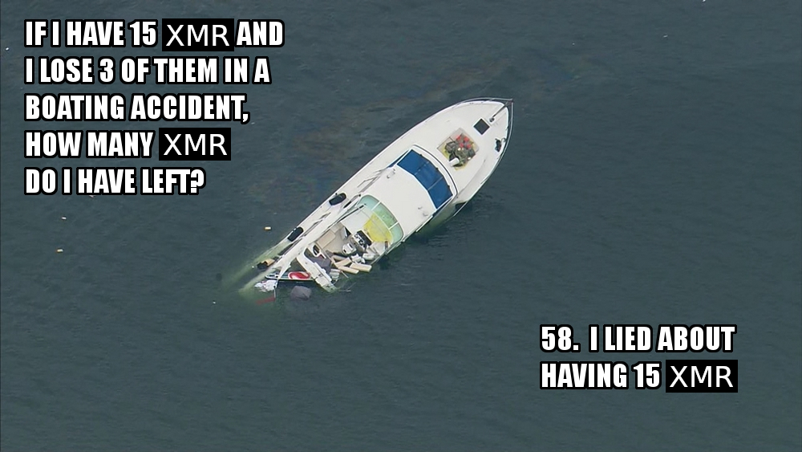

Welcome to the Boating Accident Support Hotline, a collection of resources for enabling private and KYC-free cryptocurrency usage.
Join the Monero Boating Club today!
Bitcoin Wallets --
wallet software for sending and receiving Bitcoin.
Monero Wallets --
wallet software for sending and receiving Monero.
Miscellaneous Wallets --
wallet software for sending and receiving other cryptocurrencies.
Hardware Wallets --
Highly-secure physical devices for storing cryptocurrencies.
For long term storage, it's better to use a hardware wallet.
Privacy Services --
Privacy-enchancing services to make your transactions private and anonymous.
Crypto Exchanges/Swaps --
KYC-free services to obtain cryptocurrency with fiat, and exchange different cryptocurrencies.
About
Last updated: July 6, 2022
I created this site because I despise any and all infringment on the basic human rights to privacy and voluntary exchange.
This project was heavily inspired by
kycnot.me
and privacytools.io,
both of which are incredibly helpful resources.

Q: What is KYC?
KYC stands for "Know Your Customer", or "Know Your Client".
Essentially it means that to use a service, you must provide personally-identifying information such as your name, phone number, driver's license, etc.
This information can be, and is, used to censor, surveil, and control what you do with your money and your life.
For this reason, KYC should be viewed with suspicion.
Q: What is AML?
AML stands for "Anti-Money Laundering".
AML is intended to prevent money laundering, generally by ensuring that the source of funds is known, and can be verified as legal.
It often goes hand-in-hand with KYC, and should be avoided for the same reasons.
Q: Why should I trust you, or the accuracy of your recommendations?
You shouldn't trust me, or anyone else making software recommendations for that matter. Do your own research. I am providing mere suggestions for what may be helpful, it is ultimately up to you to figure out what works best in your case.
Q: What metrics do you use to assign your ratings?
I generally consider the following: UX, decentralization, quality of the product, accessibility, privacy, dev/code transparency, reputation, track record, and others.
Q: Why does this site look so terrible and ugly?
I have quite limited expirience with webdesign.
It also doesn't help that Tor apparently doesn't like displaying pages how I intended.
In my defense, at least it fits in with 90% of the other websites in onionland.
Q: Is there a clearnet (non-onion) version of this site?
There is
a "mirror" on github,
but I strongly suggest using the onion site for better privacy.
Q: Can I donate to this project?
Yes, and every penny is appreciated; It's not free to run a website. And despite the simplicity of this site, I spent an embarrasingly large amount of time on it, especially in terms of research.
Note that these addresses may change in the future.